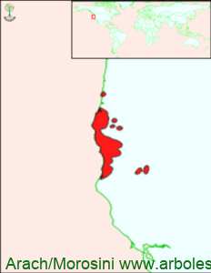

Click en las imágenes para ampliar

{kind=link}
{kind=link}
{kind=link}
- NOMBRE CIENTÍFICO
- Chamaecyparis lawsoniana
- FAMILIA BOTÁNICA
- Cupresáceas
- ORIGEN
- Tiene una pequeña área de dispersión natural, ocupa una franja cerca de la costa de los estados de California y Oregón en Estados Unidos; allí se lo puede encontrar en diversos ambientes y suelos, desde el nivel del mar hasta los 1500 msnm. Convive generalmente con otras coníferas tales como pinos ( P. jeffreyi, P. monticola ) Abetos ( Abies concolor ), Secuoya de la costa ( Sequoya sempervirens ) y Pino Oregón ( Pseudotsuga menziesii ), entre otros y algunos robles entre las latifoliadas, además de otras que forman el sotobosque.
- DESCRIPCIÓN GENERAL
- Es un árbol de gran talla alcanzando los 60 metros de altura y superando los 3 metros de diámetro a la altura del pecho. Tiene una copa de forma piramidal o cónica, densa y con el ápice principal péndulo. Su corteza juvenil es gris y lisa, cuando madura es pardo oscura y agrietada longitudinalmente.
- HOJAS
- Sus hojas son de forma escuamiformes cubriendo la totalidad de los tallos jóvenes, dispuestos en cuatro pares de escamas, las terminales con el ápice un poco levantado, son de color verde oscuro en la cara superior más claros en la inferior.
- ESTRÓBILOS
- los masculinos son terminales pequeños de color rojizo, los femeninos son globosos de color verde claro o verde azulados, de hasta un cm. de diámetro y luego de ser fecundada, se torna de color marrón rojizo, de consistencia semileñosa, conteniendo varias semillas muy pequeñas
- USOS
- Su madera es liviana, duradera, de color blanco la albura y marrón rojizo el duramen, aromática y de buena calidad. Fuera de su área de origen es una especie muy utilizada con fines ornamentales como ejemplar aislado, formando macizos y cercas.
- REPRODUCCIÓN
- Se lo multiplica por semillas, también por estacas utilizando hormonas de enraizamiento.
- PARTICULARIDADES
- Existen más de 200 cultívares, entre la gran variedad que existe, los hay de distintos colores de follaje, verde azulados, hasta dorados y verdes, de distintas formas se pueden ver varios ejemplares péndulos (con los extremos de las ramas y el ápice colgantes), de pequeño tamaño muy utilizado en jardines con poco espacio y para cercos.